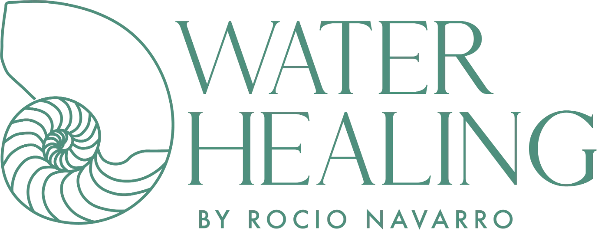
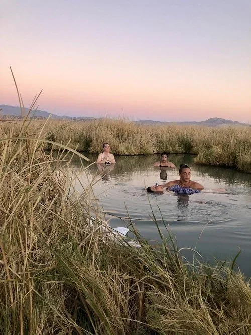
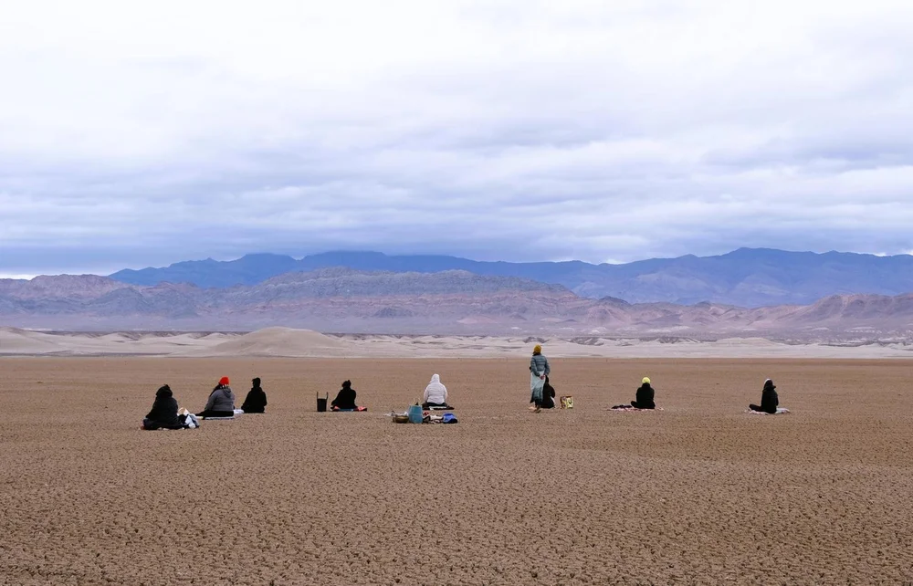

Somatic clearing in the hot springs
One-on-one water work with Rocío, in mineral water, held and moved.

Join the ExperienceA water healing experience with Rocío Navarro
Four days of silence beside desert hot springs.
Most silent retreats hand you four days and send you home. You return changed, and within two weeks the change has thinned into a memory you describe to people who weren't there.
This one is built differently. The four days in the desert are the middle of the journey — not the whole of it.
Eight guided modules carry you from the first week of preparation through to living what opened, months after you've left the water.
It is what happens when you stop having to respond.
No conversation. No explaining yourself. No arranging your face for anyone. For most people it takes about a day and a half before the mind stops narrating — and what comes after that day and a half is the reason we do this.
Your nervous system keeps a record your mind has already filed away and moved past. Silence is what lets it finally speak.
Before you had a name, before you had language, you were held in water. Warm water speaks to the body in the oldest language it knows.
These are geothermal springs in the Mojave — mineral water that has been moving underground for longer than any of us has been alive. You will be worked with directly in them: held, supported, slowly moved, with no conversation and nothing to perform.
This is not bathing. This is not relaxation.
Relaxation is what happens on the way there.


01 / 05 Drag or scroll →
The four days are the middle. Here is the whole of it.
Preparation. Guided work in the weeks leading up, so you land already open instead of spending the first two days arriving.
Guided, at home. Weeks before the desert.
Naming what you are bringing to the water.
The retreat. Tecopa, December 3–6.
Entering silence. The first day and a half.
One-on-one somatic work in the springs.
Ceremony. What the water loosened.
Night work, and what the desert returns.
Integration. Guided group work once you're home, because what a silent retreat opens is not the hard part. Carrying it into your marriage, your work, and your Tuesday morning is.
Group integration, once you are home.
Where this stops being something that happened to you and becomes how you move.

Tecopa sits at the edge of Death Valley, in a basin the desert has kept mostly to itself. There is no cell signal to speak of. There is nothing to look at but distance.
Deserts strip away context. That is the discomfort of them, and it is also the medicine: without the usual scenery of your life around you, you are unusually easy to find.
I've been held by Rocío in the water, been submerged in silence in the desert and emerged into a new way of being.
Both options include the full journey — the pre-retreat portal, the four days, all ceremony and water work, meals on site, and the integration call.
For those who don't mind company on the other side of the room — the silence keeps you separate anyway.
A door you can close. Worth it if the nights are where things tend to surface for you.
Booked before you arrive, held on site.
Fly into either gate and drive in. A car is necessary — there is no transit into the basin.
About 2 hours by car to Tecopa, most of it empty highway.
About 4 hours by car. Choose it if you're already coming through Los Angeles.
Once your place is confirmed we open a private thread so guests arriving on the same day can share the drive.
This retreat runs once a year, and it runs small — 12 places.
Not sure yet? Book a guidance call and we'll talk it through.